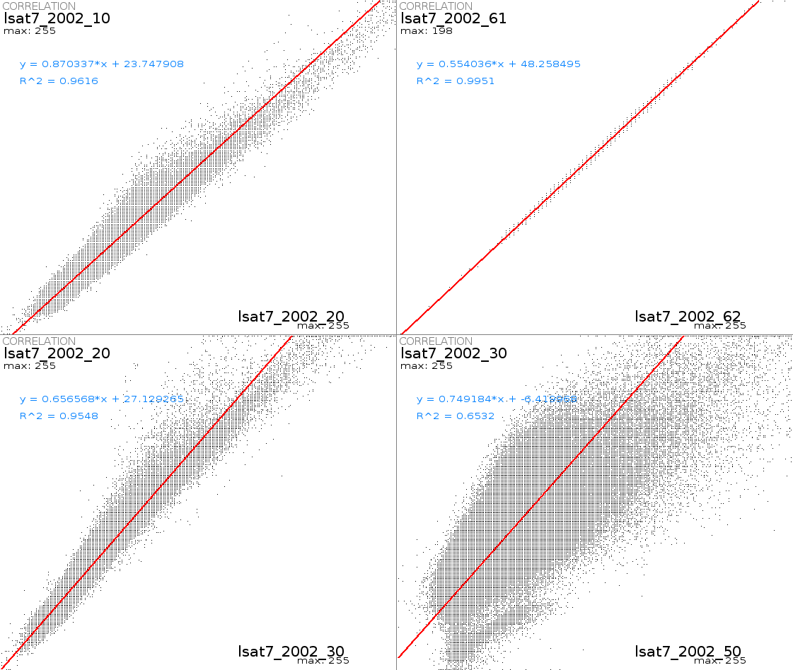

DESCRIPTION
d.correlate is a shell (sh(1)) script that
graphically displays the results of an
r.stats
run on two raster map layers. This shell script is useful
for highlighting the correlation (or lack of it) among data
layers (scattergram).
The results are displayed in the active display frame on
the user's graphics monitor. d.correlate erases
the active frame before displaying results.
The layern parameters supply the names of two to
four existing raster map layers to be included in the correlation.
NOTES
This is a shell script that uses r.stats
and the UNIX awk command to calculate the correlation among data
layers, and uses d.text and
d.graph to display the results.
If three or four map layers are specified, the correlation
among each combination of two data layers is displayed.
EXAMPLE

Compare LANDSAT-7 bands 2 and 3 in the North Carolina sample dataset,
and over-plot a trend line:
g.region rast=lsat7_2002_20
d.correlate -t layer1=lsat7_2002_20 layer2=lsat7_2002_30 --verbose
SEE ALSO
d.text,
d.graph,
r.coin,
r.regression.line,
r.stats
AUTHORS
Michael Shapiro,
U.S.Army Construction Engineering
Research Laboratory
Rewritten to GRASS 6 (from csh to sh) by Markus Neteler
Linear regression model and trend line plotting by Hamish Bowman
Last changed: $Date$